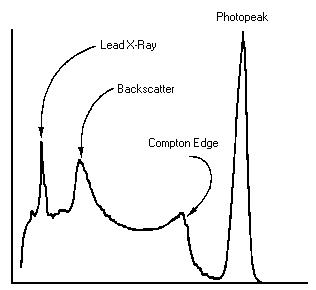
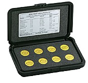
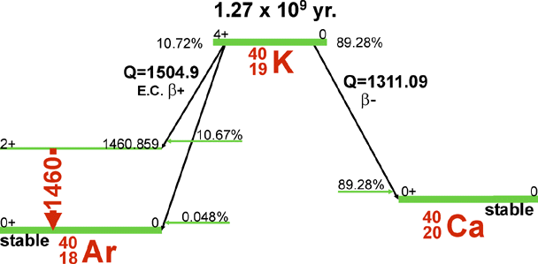

Gamma-fotoner kan förlora energi i inelastiska kollisioner med (nästan) fria elektroner. Betrakta fotoner med en energi på 662 keV. Gör en graf av elektronernas kinetiska energi efter kollisionen som funktion av spridningsvinkel (0 < θ < 180°). Rita i samma figur en graf av fotonens energi efter kollisionen. Bifog en skiss som klart visar vad spridningsvinkeln är.
Vi har två typer av detektorer för gammastrålning:
Ljudingången på datorn används för att digitalisera signalerna.
Mätinstrument är scintillationsdetektorn S-1212-I av Teledyne. Scintillatormaterialet är en 3″x3″ kristall av natriumjodid. På grund av jods stora atomnummer absorberar NaI gammastrålning effektivt. Absorption ger uppgov till snabba Compton- och fotoelektroner, vars energi snabbt minskar genom excitation i materialet. Det uppstår elektron-hål-par, som kan rekombinera vid dopningcentra (tallium) under utsändning av ljus. Saltet är transparent, och ett mörkeradapterat öga skulle kunna se små blixter (scintillationer) i materialet.
Det totala antalet synliga fotoner (blixtens ljusstyrka) är ungefär proportionellt mot mängden energi av gammafotonen som absorberas i NaI-kristallen. Ljusstyrkan mäts med PMT, photomultiplier tube.
För varje gammakvant ger detektorn alltså en puls vars höjd är proportionell mot gammafotonens energi. Pulserna digitaliseras av ljudingången och sorteras på höjd med hjälp av ett datorprogram. Programmet visar sedan en graf av gammafotonernas energifördelning.
|  | Även om kärnans gammastrålning är monokromatiskt, blir det en fördelning i instrumentet. Fototoppen produceras när gammakvantens energi helt omvandlas till en elektrons kinetiska energi genom fotoelektrisk effekt. Det blir en viss bredd i fördelningen (i scintillationsdetektorer typ 5 eller 10 %) på grund av att en slumpvis del av fotonerna detekteras av fotomultiplikatorröret. Men en del av gammafotonerna sprids genom comptonspridning. Om gammakvanten sedan lämnar detektorkristallen, mäter detektorn en lägre energi. Det ger upphov till ett comptonkontinuum av elektronenergier. Elektronen får maximal energi när gammakvanten sprids genom 180°. I spektrum ger det upphov till comptonkanten. |
Ofta är detektorn skärmad med bly, hos oss är det för att kunna mäta svagt radioaktiva prov utan störning från rummets bakgrundstrålning. Det finns gammafotoner från provet som fotoexciterar bly 1s-elektroner. Röntgenfluorescens ger då upphov till en Pb Kα topp i detektorn. Gammakvanter kan också comptonspridas av omgivningen, och de som kommer tillbaka till detektorn har spridits genom ungefär 180° och ger upphov till en backscattering peak.
Det finns andra typer av gammaspektrometrar. Vi har också en CdTe-detektor med upplösning på 1%. Detektionsprincipen liknar den av ytbarriärdetektorn - alla elektron-hålpar mäts helt elektroniskt. Nackdelen är att känsligheten är mycket lägre på grund av kadmiumtelluriddiodens lilla volym. Vid energier över 100 keV blir chansen att fotoner går rakt igenom allt större.
Riktigt bra upplösning och känslighet har kväve-kylda germaniumdetektorer. Dessa är dock mycket dyrare.
PRA är ett av programmen som använder datorns ljudingång för att digitalisera pulser. Därför måste man först förlänga pulserna från PMT-röret. I vårt fall sker det i GS-PRO modulen.
PRA.exe är ett Windows program. Vi kör det på en Mac under emulatorn Crossover. Nuvarande installerade version är 24.0.0.2. Förmodligen är det redan igång. Klicka annars på PRA.exe i mappen Win32 och programmet ska starta.
För att se signalen kan man under View öppna Audio input. Där syns inget om inte datainsamlingen är igång, så starta acquisition under Action-menyn. Antalet pulser ska inte vara så högt att de ligger för nära varandra.
Det finns två uppställningar med detektorer i GDM20-blyskärmar. Härmed går det att mäta svagt radioaktiva prov eftersom blyet absorberar strålning från byggnadsmaterial osv. För dessa ska programmet redan ha lärt sig pulsformen. Kalibreringen ska redan ha gjorts och det ska redan finnas ett baksgrundsspektrum. Därmed är allt färdigt för att samla in energispektrum i fönstret Pulse Height histogram.
Sedan finns det en mätdator som ska vara riggad för demonstrationer med koincidens. Man kan bygga ett "blyslott" med de tunga elementen men skärmning behöver inte vara lika bra där. Koincidens beror nämligen på att datorn detekterar två händelser samtidigt och sannolikheten att man räknar slumpvisa fotoner från väggen är då mycket mindre.
Öppna fönstren "Counting Rate vs Time" och "Pulse Height Histogram", flytta runt dem, justera storleken, start en ny mätning med "Start Data Acquisition" under Action-menyn. Se vad som händer när man öppnar det tunga locket av GDM20 eller när man tar fram en radioaktiv källa.
Man kan man nu göra ett urval ur följande experiment. Förutom de vanliga gammakällorna ska man göra åtminstone ett av experimenten med sönderfallstid (radondöttrar eller Cs-137). Gärna även ett av experimenten med koincidens (comptonspridning eller positronannihilering).
|  | Ta nu spektra av några radioaktiva preparat. Bestäm fototopparnas energier och jämför med litteraturvärden. Bestäm var radioaktiviteten i den "okända" källan kommer ifrån. Na-22 är en positronemitter, och förutom kärnövergången vid 1,275 MeV ser man 511-keV-fotoner från positronernas annihilering. Varför ser man en topp vid summan av 1,275 MeV och 0,511 MeV men ingen topp vid 1,022 MeV för båda fotoner från par-annihilering? |
Båda 39K (93 %) och 41K (7 %) är stabila med jämna antal neutroner, men 40K (0,0117 %) är inte helt stabilt. Vid 11 % av alla sönderfall infångar kärnan en elektron från K-skalet, och förvandlas därmed till ett exciterat tillstånd av Ar-40, som relaxerar genom gamma-emission.

Man kan mäta gammastrålning från konstgödsel, Seltin, havssalt, stenar, osv.
Våra vanliga gammakällor (till exempel den som vi gjorde i introduktionslaborationen för programmet) är märkta med Cs-137 som har en halveringstid på 30 år. Men egentligen är Cs-137 en ren betakälla. Det är sedan exciterade bariumkärnor som ger gammastrålning. Och den tar lite tid på sig: bariumkärnan är metastabil Ba-137m med en halveringstid på några minuter.
Man har alltså tid att kemiskt isolera dotterkärnan. Det gör vi med en saltsyralösning och vätskan på en aluminium planchet. Redan en droppe kan ge för många pulser för ljudpuls-mjukvaran, så ställ planchetten på en hållare lite ovanför detektorn. Eller stäng av "Use shape method" eftersom mätning på endast tröskel är snabbare och inte kastar bort pulser ligger för nära varandra i tid.
Observera att gamma-spektrumet är identisk med det av "Cs-137".
Mät pulshöjdshistogram och countrate vs time. Ställ in tid per bin på t ex 15 eller 30 sekunder och se hur intensiteten avklingar som funktion av tid. (Ta en kopp kaffe.) Uppskatta halveringstid. Se även hur det ser ut med logaritmisk skala.
En tunn metalltråd är uppspänd mellan två isolatorer. Tråden är några meter lång. På tråden ligger en högspänning på 5-10 kV, med minus på tråden. Uppställningen står i minst en halv timme i oventilerat rum. Stäng av spänningen, jorda tråden. Torka av den noga, runt om och längs hela, med ett hopvikt filtrerpapper.
Eller använd Alega's suglåda. Anslut den på en dammsugare, lägg filtrerpapper på öppningarna, och låt dammsugaren gå i en halv timme.
Lägg pappret med radondöttrarna snabbt som efter insamlingen på scintillatordetektorn. Mät aktiviteten som funktion av tid. Man kan också mäta radioaktiviteten i en serie av spektrum.
Analysera. Vilka nuklider ser du?
Kemiskt isolerade grundänen kan ha komplicerade spektrum. De innehåller fortfarande olika isotoper, och den mest sällsynta isotopen kan ha högst aktivitet (t ex U-234). Dessutom finns det gammastrålning från sönderfallsprodukter. Försök ge beteckningar åt de synliga topparna, och redogör för dina resonemang. Det finns provar av radium (i en klocka), torium i en gasstrumpa och uran (i vaselinglas eller som uranylnitrat).
Spektra från uranmalm osv innehåller ännu fler toppar, eftersom alla uranisotoper är i jämnvikt med hela sönderfallsserien.
Man kan titta på alunskiffer, blåbetong, rödfyr mm. Försök identifiera de starkaste gammatopparna.
Eventuellt:
Med en effektivitetskalibrering blir det möjligt att bestämma aktiviteten av okända prov kvantitativt: älgkött, ren och svamp (Tjernobyl), vatten, radonfilter, aska, stenar, blåbetong.
{kind=link}
{kind=link}